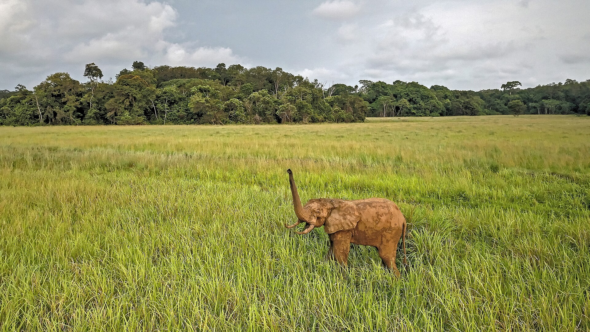
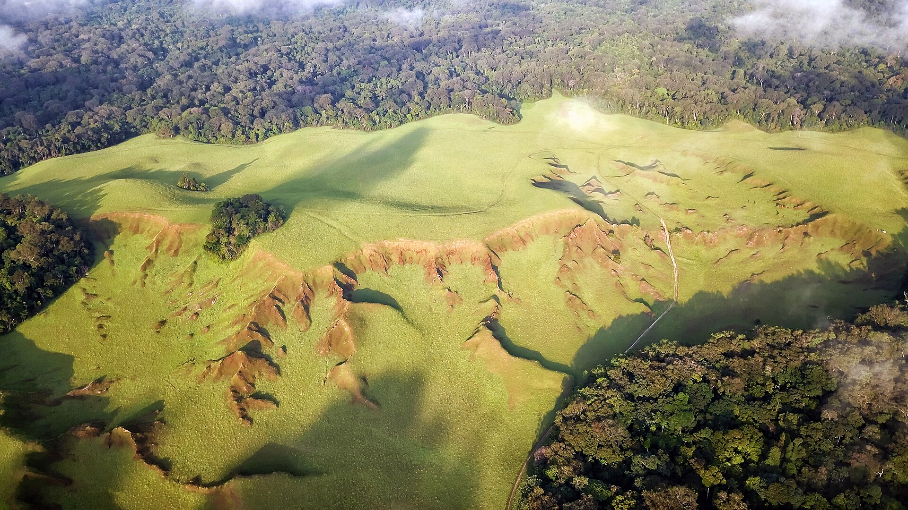
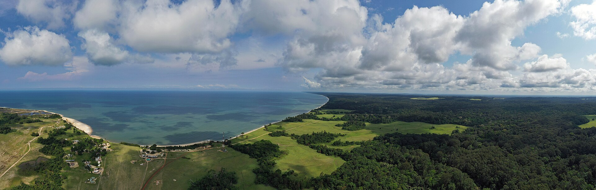
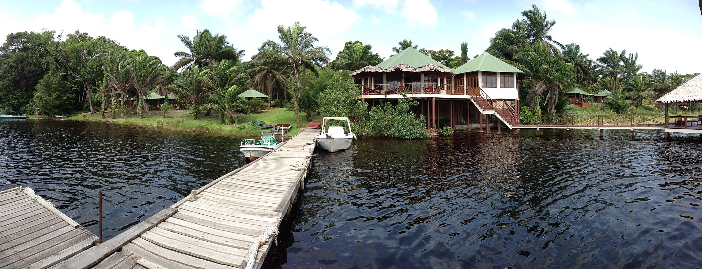
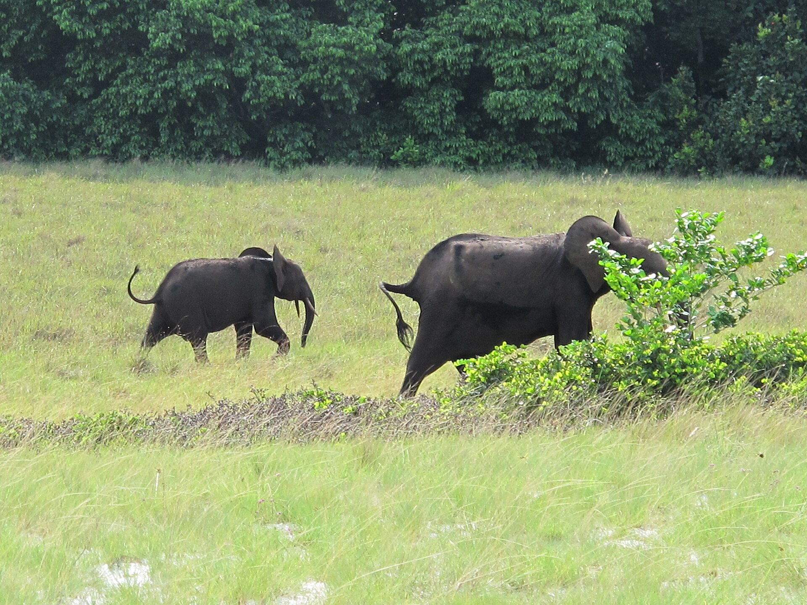
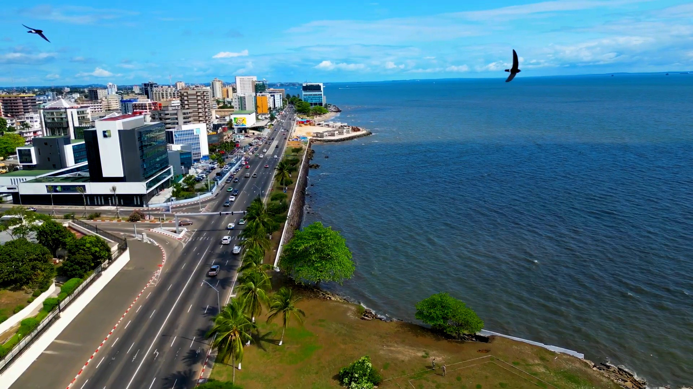
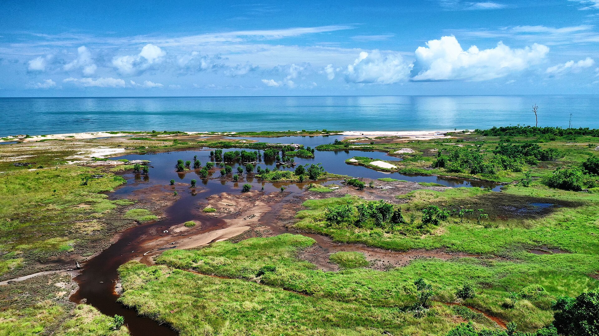
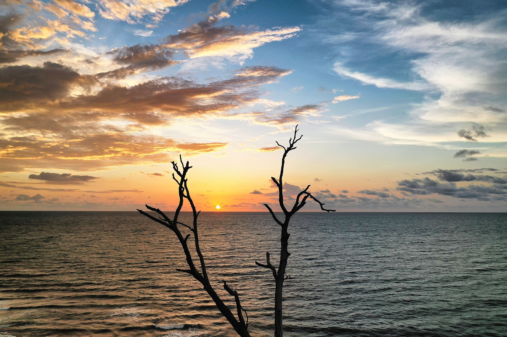
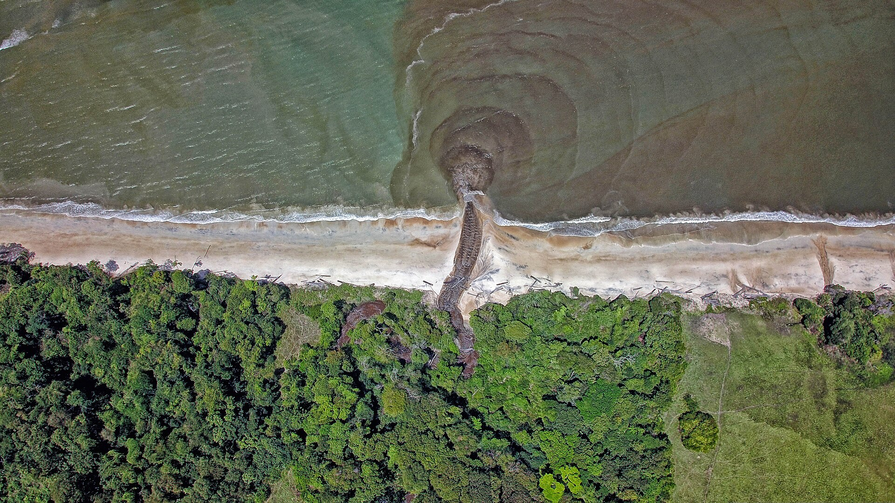
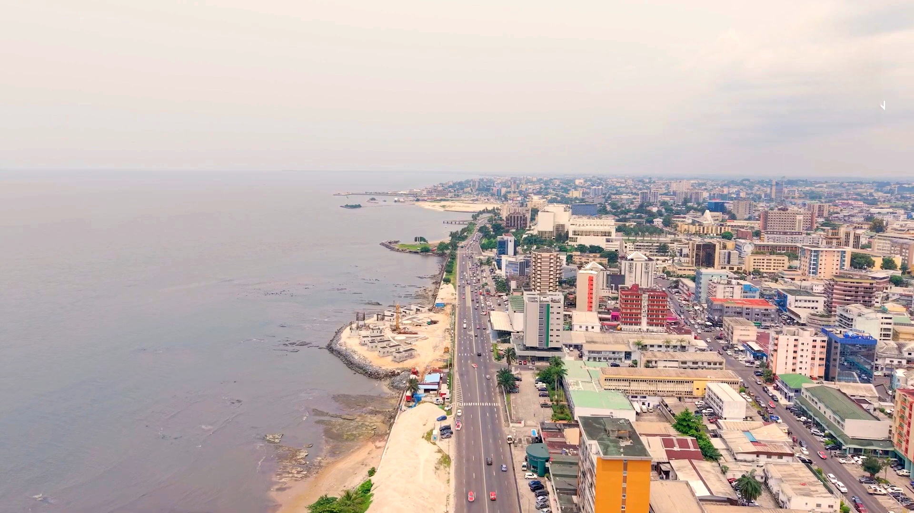

Un week-end à Nyonié
Savane, plage, lodge partenaire.
Préparer, organiser et vivre un séjour au Gabon.
Immo & Vérifié · Stay · Tourisme · Conciergerie · Diaspora
Ce que contient cette charte
Le projet
KAZA GABON – ÉCO TOURISME est une plateforme numérique gabonaise qui centralise des solutions de logement, d’hébergement, de tourisme et de conciergerie, avec un accompagnement dédié à la diaspora.
Depuis un même espace, l’utilisateur trouve un logement, réserve un hébergement de courte durée, organise des expériences touristiques et commande des services pratiques. La marque doit donc être lisible dans cinq univers de service différents, et rester une seule et même voix.

Savane de NyoniéCe que la marque promet : le Gabon réel, accessible, bien organisé.
Photos (Wikimedia Commons) — Éléphant dans la savane de Nyonié : VIGNA christian, CC BY-SA 4.0.
Mission
Permettre à chacun de trouver un logement, de réserver un hébergement, d’organiser ses expériences et de commander les services du quotidien depuis un seul espace, avec des annonces vérifiées et des partenaires engagés.
Vision
Faciliter aussi l’accès aux services immobiliers et aux prestations du quotidien, pour les résidents comme pour ceux qui reviennent.
Valeurs
Architecture officielle
Vente et location de maisons, appartements, studios et terrains ; annonces vérifiées, badge KAZA Vérifié, mise en relation avec propriétaires et agences.
Appartements meublés, studios, villas, maisons de vacances et résidences partenaires ; calendrier, réservation, avis, espace propriétaire.
Excursions, circuits, visites guidées, parcs nationaux, forêts, plages et lagunes ; guides, agences et opérateurs partenaires.
Ménage, chauffeur et transferts, blanchisserie, courses, entretien et petits travaux, à la demande ou en récurrence.
Un parcours intégré pour les Gabonais de l’étranger : préparation du séjour, hébergement, mobilité, expériences, suivi centralisé.
Les cinq pôles sont fixés par la fondatrice. Aucun pôle autonome supplémentaire n’est créé sans sa validation ; chaque pôle garde le préfixe KAZA et la même identité.
Parcours utilisateur transversal
Une personne vivant à l’étranger renseigne son pays de départ, ses dates, le nombre de voyageurs, ses besoins et un budget indicatif. L’équipe KAZA prend le relais.
Un appartement meublé ou une villa pour trois semaines, avec galerie, équipements, règles, disponibilités et récapitulatif du prix avant paiement.
Parc national, lagune, visite guidée, activité culturelle : des fiches claires, des partenaires identifiés, une demande puis une confirmation.
Un chauffeur à l’arrivée, un ménage en milieu de séjour, des courses le premier jour. Tout dans le même récapitulatif de séjour.
Un profil commun, un espace personnel qui regroupe demandes, réservations, paiements, messages et historique.
Demande reçue, validation, paiement, confirmation, rappel, modification : chaque étape est notifiée, dans le même vocabulaire et les mêmes couleurs.
Le voyageur passe d’un pôle à l’autre sans changer d’univers : même logo, même palette, mêmes composants, seul le nom du pôle change.
Personnalité et ton de voix
La marque est
Elle n’est pas
Ton de voix
Vouvoiement partout. Des phrases courtes, concrètes, qui disent ce qui va se passer et quand. On rassure par la précision (prix, conditions, délais, statuts), jamais par des superlatifs. On nomme les lieux : Loango, Lopé, Nyonié, Pointe-Denis, Libreville. Pas de jargon technique, pas d’anglicismes inutiles ; les noms de pôles restent en capitales.
Positionnement
Le point d’entrée fiable pour préparer, organiser et vivre un séjour au Gabon.
Préparer. Organiser. Vivre le Gabon.
Proposition de MÉTHODE AURA à valider par la fondatrice ; aucune signature n’est imposée par le cahier des charges.
Logo principal
Le logo fourni par la fondatrice a été reconstruit en vectoriel sans en changer le dessin : mêmes proportions, mêmes couleurs, mêmes éléments. Les fichiers SVG livrés remplacent l’image d’origine pour tous les usages.
Versions du logo
Principale. Blanc cassé et toits vert citron sur vert forêt : la version de référence, celle de l’application, des réseaux et des supports sombres.
Sur fond clair. Vert forêt et toits vert citron sur blanc cassé : documents, factures, fonds photo clairs, co-branding.
Monochrome blanc. Gravure, broderie, tampon, filigrane, fond photo sombre sans accent : tout en blanc cassé.
Monochrome vert forêt. Impression une couleur, fonds vert gris ou vert citron, documents administratifs.
Icône, avatar, favicon
Le A seul, avec son toit, représente la marque quand le mot complet ne tient pas : icône d’application, avatar des réseaux, favicon, puce de liste, marqueur de carte, cachet sur une photo.
Déclinaisons
Recolorer : aucune autre couleur que celles de la palette.
Déformer, étirer, écraser, incliner.
Poser sur un dégradé ou une couleur hors charte.
Ajouter une ombre, un relief, un contour.
Changer la police ou la casse de GABON.
Mettre le symbole à la place du mot quand la place existe.
Palette chromatique
01 · Dominante
Fonds, navigation, grands aplats, identité principale. La profondeur de la forêt gabonaise ; le calme et le sérieux de la marque.
55 %
02 · Accent
Boutons d’action, liens importants, icônes, indicateurs actifs, mots mis en évidence, toits du logo.
10 %
03 · Clarté
Textes sur fond sombre, surfaces claires, fonds de pages et de fiches, cartes.
30 %
04 · Discret
Textes secondaires sur fond sombre, bordures, séparateurs, états désactivés, légendes.
5 %
Ce qui se lit, ce qui ne se lit pas
Blanc cassé sur vert forêt
Texte #F7F8F4 sur #00291BContraste 14,8:1 · texte courant autorisé
Vert citron sur vert forêt
Texte #C7F974 sur #00291BContraste 12,9:1 · texte courant autorisé
Vert gris sur vert forêt
Texte #9AAFA4 sur #00291BContraste 6,8:1 · texte courant autorisé
Vert forêt sur vert citron
Texte #00291B sur #C7F974Contraste 12,9:1 · texte courant autorisé
Vert forêt sur blanc cassé
Texte #00291B sur #F7F8F4Contraste 14,8:1 · texte courant autorisé
Vert gris sur blanc cassé
Texte #9AAFA4 sur #F7F8F4Contraste 2,2:1 · pas de texte
Vert citron sur blanc cassé
Texte #C7F974 sur #F7F8F4Contraste 1,1:1 · pas de texte
Vert forêt sur vert gris
Texte #00291B sur #9AAFA4Contraste 6,8:1 · texte courant autorisé
Répartition indicative d’un écran ou d’un support : le vert forêt structure, le blanc cassé aère et porte le texte, le vert citron déclenche l’action, le vert gris sépare. Un support majoritairement vert citron est réservé aux temps forts (lancement, promotion, événement).
Typographie principale
ABCDEFGHIJKLMNOPQRSTUVWXYZ
abcdefghijklmnopqrstuvwxyz
0123456789 & ! ? € FCFA → « » @
Votre séjour commence ici.
Villa à Pointe-Denis, 4 voyageurs
Libreville, Gabon
Une géométrique contemporaine, aux capitales larges et aux formes rondes, qui prolonge le dessin des lettres KAZA. Elle compose la ligne GABON du logo, les noms des pôles, les titres, les boutons et les étiquettes.
Typographie secondaire et échelle
ABCDEFGHIJKLMNOPQRSTUVWXYZ abcdefghijklmnopqrstuvwxyz 0123456789
Descriptions de logements et d’expériences, conditions, prix, messages, notifications, formulaires, mentions légales. Très lisible à petite taille sur mobile, chaleureuse sans être ronde.
Loango
Trois nuits au bord de la lagune
Villa entière · 4 voyageurs · 2 chambres
Le récapitulatif détaille le prix, les frais éventuels, les conditions d’annulation et le montant total avant tout paiement.
Réservation soumise à la validation du partenaire sous 24 heures.
KAZA STAY · Vérifié · Nouveau
Bannière
Vivre
le Gabon.
Logement, séjour, expériences, services
Un seul compte pour tout préparer, tout réserver, tout suivre.
Fiche descriptive
Villa entière · 4 voyageurs · 2 chambres · plage à 50 m
Terrasse face à la mer, cuisine équipée, groupe électrogène, transfert en bateau organisé par KAZA CONCIERGERIE.
85 000 FCFA / nuit
Prix d’exemple pour la mise en page, à remplacer par les tarifs réels des partenaires.
Temps fort
Les parcs
nationaux
Loango · Lopé · Pongara · Ivindo
Excursions guidées avec des opérateurs partenaires, du vendredi au dimanche.
Système graphique · élément 1
L’arc du logo, agrandi et prolongé : un trait vert citron qui part du bas à gauche, monte vers la droite et se termine en pointillé sous l’avion. Il raconte le voyage avant le voyage, le retour au pays, la liaison entre les pôles.
Système graphique · éléments 2 et 3
Une rangée de triangles au rythme du A, pleins ou en trait, de hauteurs variées comme une ligne de toits ou de cimes. Bordure basse d’un support, séparateur entre deux sections, fond d’une bannière. Jamais sous du texte, jamais plus de 25 % de la hauteur.
Deux lignes de collines boisées, en vert relief et en vert gris léger, posées en bas d’un fond vert forêt : la silhouette du paysage gabonais sans illustration ni dessin figuratif. Réservés aux fonds d’écrans d’accueil, de couvertures et de stories ; ils laissent toujours le tiers haut libre pour le texte.
Système graphique · élément 4
Le profil, les documents et les informations du bien ou du partenaire ont été contrôlés par l’équipe KAZA selon la procédure de vérification. C’est la promesse de confiance de la marque ; il distingue ce qui est vérifié de ce qui ne l’est pas.
Règles d’assemblage

La plaine de Nyonié, à deux heures de Libreville.
Préparer
son retour.
Villa à Pointe-Denis
Vivre le Gabon.
Une grande photo du Gabon quand on en a une vraie ; sinon un aplat vert forêt avec un seul élément graphique (trajectoire, toits ou reliefs).
Sur photo, un voile vert forêt monte du bas pour porter le texte ; le haut de l’image reste visible.
Le texte occupe la zone calme, en Outfit 600 ; le logo ou le symbole se pose dans un angle, dans sa zone de protection.
Un seul élément graphique par support ; deux sur les grands formats (kakémono, bâche, écran d’accueil).
Le vert citron apparaît une fois : le bouton, le mot clé ou la trajectoire. Pas les trois.
Les motifs sont livrés en vectoriel ; on les recadre, on ne les déforme pas, on ne les recolore pas.
Photos (Wikimedia Commons) — Plaine de Nyonié : VIGNA christian, CC BY-SA 4.0.
Direction photographique

Côtes et lagunesBaie de Nyonié, vue de la forêt

Hébergements réelsLodge du parc national de Loango

Faune et parcsÉléphants, parc national de Loango

La villeFront de mer de Libreville

NatureMangrove de Nyonié

LumièrePlage de Nyonié au coucher du soleil
De grandes photographies du Gabon : paysages, forêts, côtes, lagunes, parcs, villes, hébergements et expériences réels. Les lieux sont nommés. Les logements montrés sont ceux des partenaires, photographiés sur place ; les expériences, celles qui sont réellement proposées.
Banques d’images génériques et illustrations qui ne représentent pas le Gabon, retouches lisses, filtres colorés, ciels remplacés, photos de logements trompeuses, visages sans autorisation.
Les images de cette charte proviennent de Wikimedia Commons sous licences libres, avec crédit obligatoire (ci-dessous) ; elles servent de référence de direction. La plateforme utilisera ses propres prises de vues et celles de ses partenaires.
Photos (Wikimedia Commons) — Baie de Nyonié vue de la forêt : VIGNA christian, CC BY-SA 4.0 · Lodge du parc national de Loango : Kurt Dundy at English Wikipedia, CC BY 3.0 · Éléphants du parc national de Loango : Kurt Dundy at English Wikipedia, CC BY 3.0 · Front de mer de Libreville : Shirmy25, CC BY-SA 4.0 · Mangrove de Nyonié : VIGNA christian, CC BY-SA 4.0 · Plage de Nyonié au coucher du soleil : VIGNA christian, CC BY-SA 4.0.

Vue aérienne, rivière de Nyonié
Cadrage
Lumière de fin de journée, Nyonié
Lumière

Libreville, bord de mer
Traitement
Photos (Wikimedia Commons) — Rivière de Nyonié : VIGNA christian, CC BY-SA 4.0 · Plage de Nyonié au coucher du soleil : VIGNA christian, CC BY-SA 4.0 · Libreville, bord de mer : Shirmy25, CC BY-SA 4.0.
Publication, story, profil
KAZA TOURISME
Loango, les éléphants de plage
Journée guidée avec un opérateur partenaire vérifié.
Publication carrée : photo pleine, voile vert forêt par le bas, titre Outfit 600, logo en haut à droite, nom du pôle en vert citron.
Un week-end à Nyonié
Savane, plage, lodge partenaire.
Story : même construction en 9:16 ; le logo seul en haut, le lieu en titre, un seul mot en vert citron.
kaza.gabon
KAZA GABON – ÉCO TOURISME · Logement, séjour, expériences, services
Côtes
Villa à Pointe-Denis
Libreville
Diaspora
Mangrove
Conciergerie
Profil : le symbole en avatar ; une grille qui alterne photos voilées, aplats vert citron et blanc cassé. Rien de criard, un rythme.
Photos (Wikimedia Commons) — Éléphants du parc national de Loango : Kurt Dundy at English Wikipedia, CC BY 3.0 · Plage de Nyonié au coucher du soleil : VIGNA christian, CC BY-SA 4.0 · Baie de Nyonié vue de la forêt : VIGNA christian, CC BY-SA 4.0 · Front de mer de Libreville : Shirmy25, CC BY-SA 4.0 · Mangrove de Nyonié : VIGNA christian, CC BY-SA 4.0.
Papeterie
Prénom NomFonction · KAZA GABON
+241 00 00 00 00 · prenom@kaza.ga
Recto : vert forêt, logo, trajectoire dans l’angle, coordonnées en blanc cassé.
KAZA GABON – ÉCO TOURISMELogement · Hébergement · Tourisme · Conciergerie · Diaspora
kaza.ga
Verso : blanc cassé, symbole, les cinq pôles en une ligne, adresse du site. Format 85 × 55 mm, papier mat 350 g.
Signature de courriel : symbole à gauche, trois lignes, aucune image lourde, aucune couleur hors charte. Les coordonnées sont des gabarits à remplacer.
Sur tout support imprimé, le logo complet apparaît une fois, dans sa zone de protection ; le symbole remplace le logo sur les petits formats. Les domaines et numéros figurant ici sont des exemples.
Supports d’événement et de terrain
Préparer.
Organiser.
Vivre
le Gabon.
Kakémono 85 × 200 cm : photo en tête, voile vers le bas, titre en bas.
Les parcs nationaux, guidés.
Affiche 50 × 70 cm : logo du pôle en haut à gauche, zone calme en bas.
Autocollants de porte et de vitrine pour les partenaires vérifiés, 8 cm.
Photos (Wikimedia Commons) — Baie de Nyonié vue de la forêt : VIGNA christian, CC BY-SA 4.0 · Éléphants du parc national de Loango : Kurt Dundy at English Wikipedia, CC BY 3.0.
Les maquettes de cette charte fixent les règles ; les photos des partenaires et les supports réels les remplaceront au fil de la production. Les écrans de la plateforme feront l’objet d’un chapitre à part, une fois l’application conçue. Les supports non prévus ici (bâche, véhicule, uniforme) suivent les règles d’assemblage du chapitre 05.
Logo principal sur vert forêt, zone de protection respectée.
Logo posé sur une photo chargée, sans voile ni zone calme.
Nyonié
Photo, voile vert forêt, titre dans la zone calme.
NYONIÉ
Pas de voile, deux motifs, titre vert citron ombré au centre.
Vivre
le Gabon.
Vert citron pour un seul mot mis en évidence, sur vert forêt.
Réservez votre séjour dès maintenant
Texte vert citron sur blanc cassé : illisible.
Un pôle, un logo, la ligne GABON remplacée par le nom du pôle.
Deux pôles sur le même logo.
Savane de Nyonié
Une photo réelle du Gabon, lieu nommé.
Illustration générique qui ne représente pas le Gabon.
Le badge KAZA Vérifié, une seule forme.
Badge recoloré, renommé, réinterprété.
Trois nuits
à Loango.
Un titre court, Outfit 600, deux lignes.
Trois nuits de rêve
à LOANGO !!!
Polices étrangères, couleurs hors charte, superlatifs.
Le symbole pour les petits formats.
Le logo complet écrasé à 56 px : plus rien n’est lisible.
Photos (Wikimedia Commons) — Éléphant dans la savane de Nyonié : VIGNA christian, CC BY-SA 4.0.
Les SVG embarquent la police pour s’afficher partout ; pour la broderie et la signalétique, faire vectoriser GABON et les noms de pôles par le prestataire à partir de ces fichiers. Le fichier source du logo d’origine, s’il existe, reste à réclamer à son auteur.
Préparer.
Organiser.
Vivre le Gabon.
Libreville, Gabon · version 1.0 · novembre 2026
Collaboration
KAZA GABON × MÉTHODE AURA
Cette charte graphique a été conçue et réalisée par MÉTHODE AURA, studio de marque, à partir des références visuelles et du cahier des charges fournis par la fondatrice de KAZA : reconstruction vectorielle du logo, système graphique, typographie, réseaux sociaux, supports imprimés et direction photographique.
Du concept à l’impact.
Version 1.0 · novembre 2026 · Libreville, Gabon. Les logos et polices de MÉTHODE AURA restent la propriété du studio ; ceux de KAZA sont livrés à la marque. Photographies : Wikimedia Commons, auteurs et licences indiqués sur chaque planche.